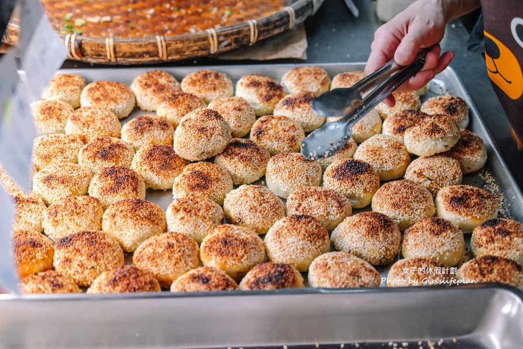

女子的休假計劃｜盛味豐炭烤燒餅：科技大樓站老麵炭烤三星蔥燒餅

一句話摘要
《盛味豐炭烤燒餅》是科技大樓站附近、和平東路二段上的排隊燒餅小店，主打老麵發酵與傳統炭烤，最人氣品項是使用三星蔥調味的炭烤燒餅。
為什麼保存
這篇屬於實用生活／美食資訊，原文提供完整店家資訊、交通位置、菜單價格帶與口味評價。未來在科技大樓站、和平東路二段、大安區找早餐、下午點心、銅板小吃或排隊燒餅時，可以快速查回。
店家資訊
- 店名：盛味豐炭烤燒餅
- 地址：台北市和平東路二段321號
- 交通：鄰近捷運科技大樓站；隔壁是巧房餡餅
- 電話：02 2702 2232
- 營業時間：06:30–18:30
- 公休日：週日
- 類型：燒餅、炭烤燒餅、老麵小吃、台北銅板美食
原文重點整理
- 《盛味豐炭烤燒餅》在 Google 評價約 4.5 星，是附近人氣排隊店。
- 燒餅採傳統炭烤出爐，數量不多，熱門時段需要等待。
- 文章提到可先預訂節省時間，也有買十送一優惠。
- 價格相對平價，品項約落在 NT$17–25。
- 最人氣品項是炭烤燒餅；原文排到下一輪出爐才買到。
口袋菜單
| 品項 | 價格帶 | 原文備註 |
|---|---:|---|
| 炭烤燒餅 | 約 NT$17–25 | 最熱門；使用三星蔥調味，口感偏硬、有嚼勁，餅皮外脆內軟，可吃到麵香。 |
| 蔥酥餅 | 約 NT$17–25 | 外層酥脆、蔥花香氣明顯；原文第一次吃很喜歡，後續還加買帶回。 |
| 豆沙酥餅 | 約 NT$17–25 | 豆沙內餡飽滿，口感像豆沙鍋餅；原文評為推薦。 |
| 芝麻糖餅 | 約 NT$17–25 | 外層酥脆、芝麻香濃，內餡是芝麻糖；原文覺得芝麻味偏重且略帶苦味。 |
適合情境
- 在科技大樓站、和平東路二段附近想買早餐、點心或銅板小吃。
- 想吃傳統炭烤燒餅、老麵發酵麵香與三星蔥口味。
- 可接受排隊或等待下一輪出爐。
- 想順手買多顆分享，或利用買十送一優惠。
實用提醒
熱門品項與炭烤出爐批次可能需要等待；若大量購買或不想排太久，原文建議可先預訂。營業時間、價格與公休日可能調整，出發前建議再以 Google Maps 或電話確認。